Loading…
Loading…
Loading…
Loading…
Loading…
Loading…
Loading…
Loading…
Loading…
Loading…
Loading…
Loading…
Loading…
Screen customers, monitor transactions, triage alerts, and manage investigations — all in one platform built for compliance teams who can't afford to miss a signal.
Every action is timestamped and attributed, audit-ready by default.
Transactions are evaluated against your rules the moment they happen.
From screening to STR filing, without switching tools.
Weightages, severity bands, and rules tuned to your own risk policy.
A single platform covering the full anti-money-laundering lifecycle, not a patchwork of point tools.
Match customers against sanctions, PEP, and adverse media lists with configurable, explainable scoring — Watchlist Search for ad-hoc lookups, Batch and Delta Screening for ongoing coverage.
Detect structuring, unusual transfers, and rapid movement with typologies and variables you build, test in Shadow mode, and publish yourself.
Every alert has a clear path to a case, a disposition, and — where needed — a filed STR, with the full lifecycle timestamped for audit.
My Queue, All Alerts, and Admin View give analysts, supervisors, and MLROs exactly the visibility their role needs — nothing more.
Alert Triggered → Investigator Review → Findings Documented → Disposition → MLRO Approval → Audit Record — the same lifecycle, every time.
AI Manager pre-assembles screening history, transaction patterns, and prior cases into a draft summary — the analyst still makes the call.
Where a confirmed alert becomes a full investigation. Case Queues, a defined Case Lifecycle from review to sign-off, and an audit trail of every action taken along the way.
ExploreEvery alert from Screening or Monitoring lands here first. My Queue, All Cases, and Admin View give analysts, supervisors, and MLROs the visibility their role needs, with SLA countdowns on every row.
ExploreEvery customer's profile in one record — KYC details, risk score, and full screening history. The single source of truth other modules (Case Manager, Name Screening) read from and write back to.
ExploreOne row per filed Suspicious Transaction Report, linking back to the originating case and its transactions — plus the filter, export, and share views supervisors and regulators use on top of the same data.
ExploreDrafts a first-pass summary for incoming alerts and cases, then configures everything behind that drafting on two tabs: Prompt Config (the versioned instructions it follows) and Model Config (the model identity, API key, and Temperature it runs on, with full history and Restore).
ExploreFour ways in — Watchlist Search, Manual Screening, scheduled Batch runs, and Delta Screening for ongoing customers — with the matching weightages and severity bands behind every hit set once in its own Configuration area.
ExploreConfigures how Name Screening and Transaction Monitoring alerts automatically become cases — which alert types feed case creation, and how they group together based on customer, case age, and status.
ExploreTypologies (rules) built from reusable Variables evaluate every transaction against your thresholds, versioned through Draft, Shadow, and Published states. Group By, Look Back, and Suppression shape exactly when — and how often — an alert should fire.
ExploreScheduled Watchlist and TMS (transaction) ingestion jobs, with a clear job history so you can see exactly when data last landed and whether it validated cleanly.
ExploreNo install, no setup wizard — just log in and start where your team already works.
Explore the platform →Your platform URL, your credentials, verified with an OTP step.
Everything you need is one click away in the sidebar.
Run a screening check or watch alerts arrive from active rules.
Turn a confirmed hit into a case, and close it with a clear disposition.
Every module above, documented step by step.
FT AML is an Anti-Money Laundering (AML) platform that helps financial institutions detect suspicious activity, screen customers against regulatory watchlists, monitor transactions, manage investigations, and comply with AML/CTF regulations.
FT AML is built around a core set of objectives:
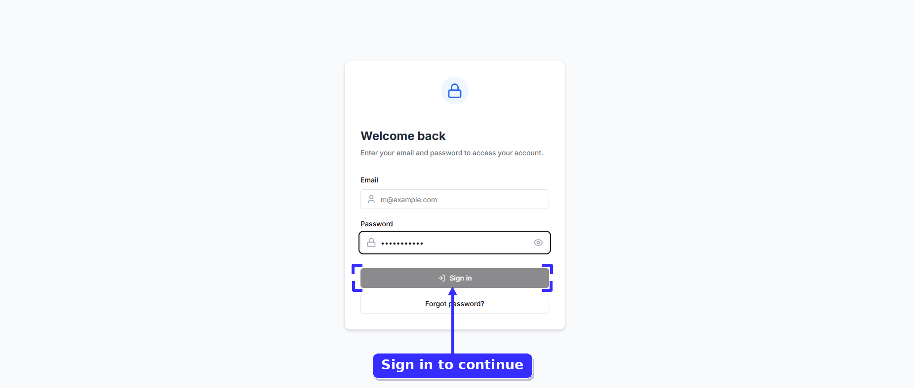
Secure authentication is the first line of defense for sensitive AML data, and every login is tied to a user account — supporting audit requirements by recording who created, modified, or closed an AML investigation.
After entering valid credentials, the user is redirected to the Homepage. This is the central workspace for compliance teams, giving quick access to every AML module from one place and reducing time spent switching between investigations, screening, and monitoring activities.
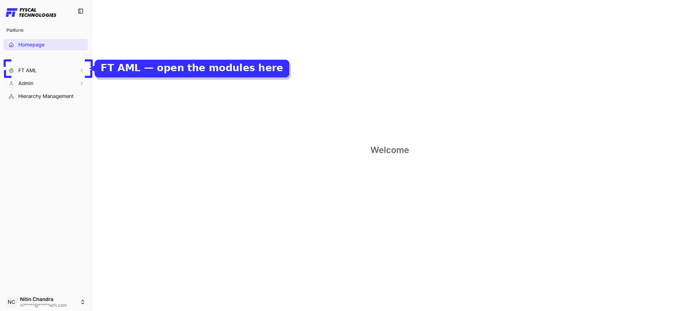
Every screen in FT AML is gated by the logged-in user's role — what a user sees on login, which module tabs they can open, and which actions are available to them all follow directly from the role assigned in Admin → Roles & Permissions.
| Access area | Compliance Analyst | Compliance Officer / MLRO | Configuration Admin | IT / Platform Admin |
|---|---|---|---|---|
| Case Manager / Alert Manager — My Queue | Yes | Yes | — | — |
| Case Manager / Alert Manager — All Cases / All Alerts / Admin View | — | Yes | — | — |
| Approve STR filing | — | Yes | — | — |
| Name Screening / Alert Configuration (edit) | — | — | Yes | — |
| Transaction Monitoring rules & variables (edit) | — | — | Yes | — |
| User Management & Data Ingestion schedules | — | — | — | Yes |
After logging in, users can access the full range of FT AML modules from the FT AML menu. The hierarchy below shows how the modules and their sub-features are organized, so you know where to find each feature before exploring it in detail.
Which of these a given user actually sees depends on their assigned role — see Roles & Access for how access is scoped per module.
The workspace where every investigation lives. When an alert from Name Screening or Transaction Monitoring needs a human look, it becomes a case here — either automatically, per the rules set in Automation → Case Creation, or manually — and every action taken on it, from first review to final sign-off, is recorded for audit.
Cases are organized into three views, switchable from tabs at the top of the screen:
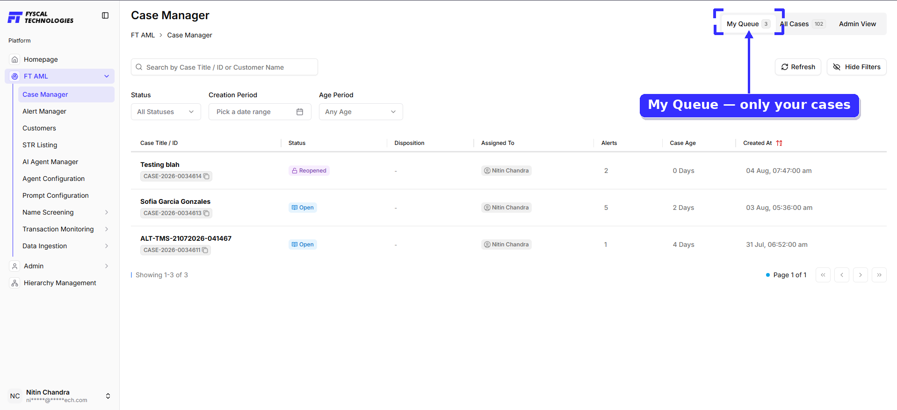
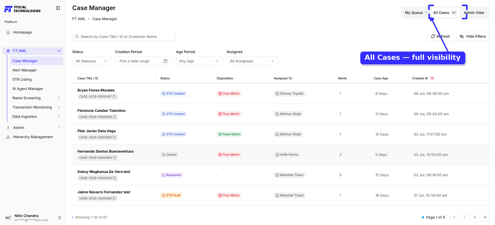
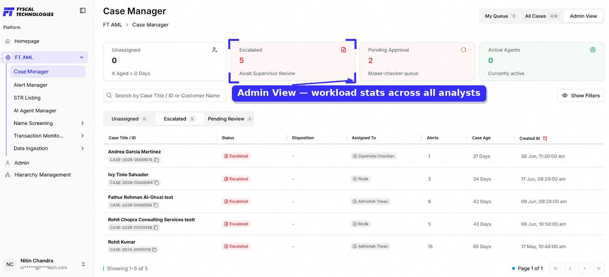
View Case — clicking a row opens the case's dedicated detail screen rather than a simple pop-up. From here an analyst can:
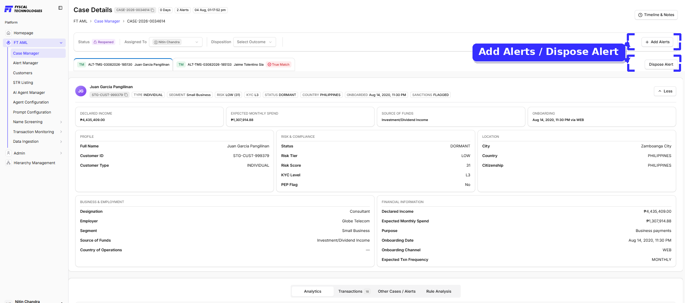
Add Alerts — a case can grow to cover more than the alert(s) it opened with. Clicking Add Alerts on the case detail screen lets an analyst merge other ungrouped alerts on the same subject into the current case, rather than investigating each one separately:
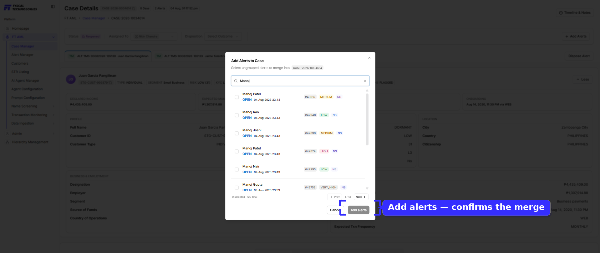
Case detail tabs — below the customer profile, the case detail screen organizes supporting evidence into four tabs:
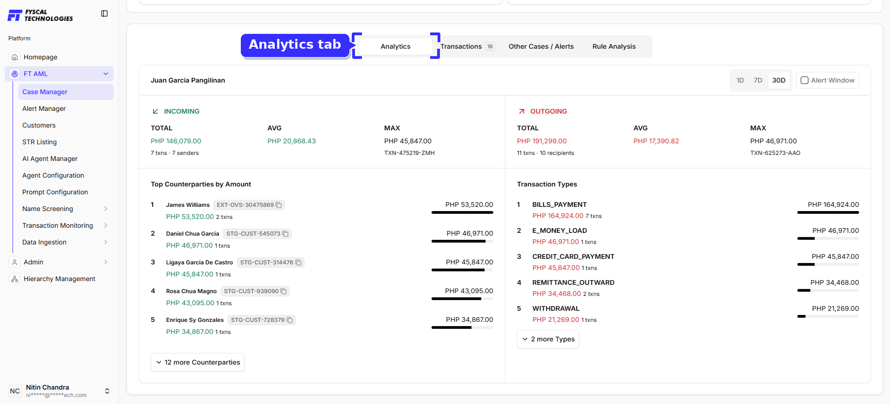
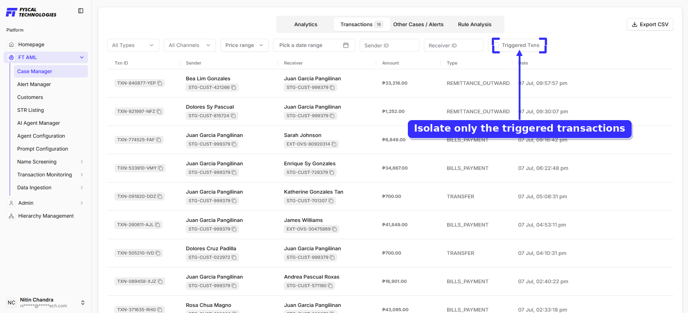
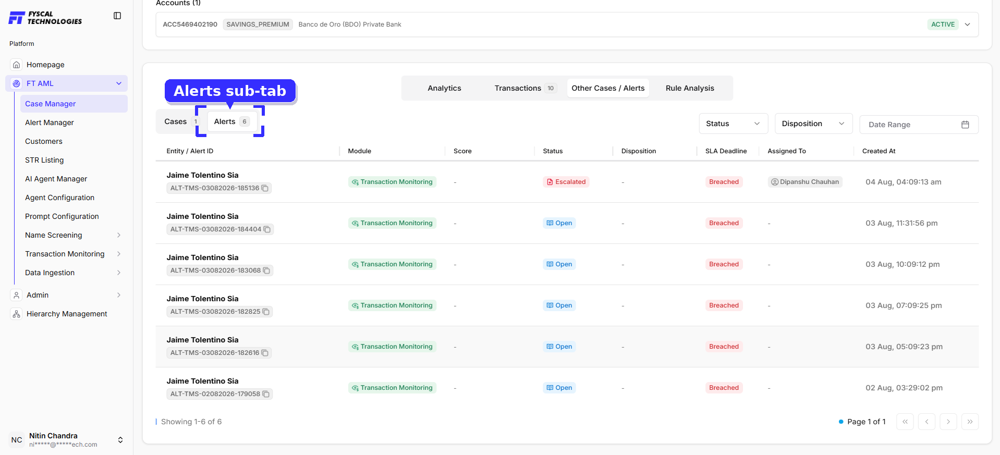
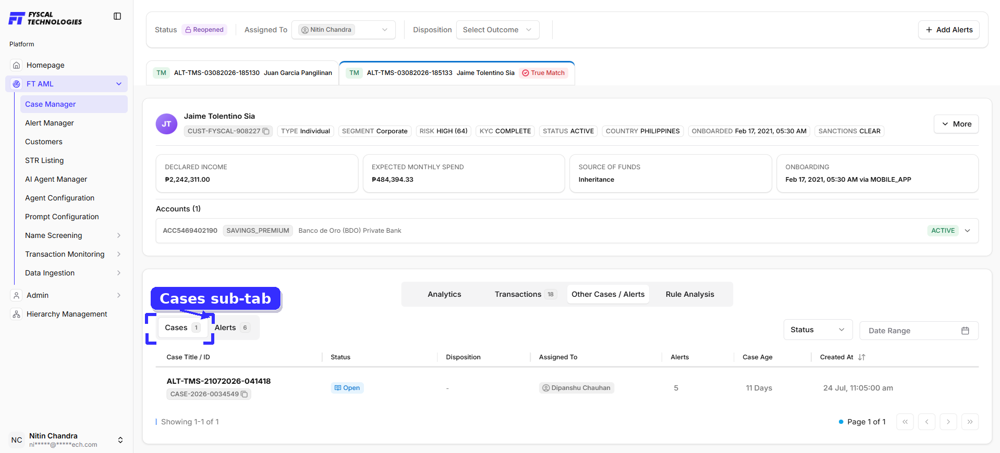
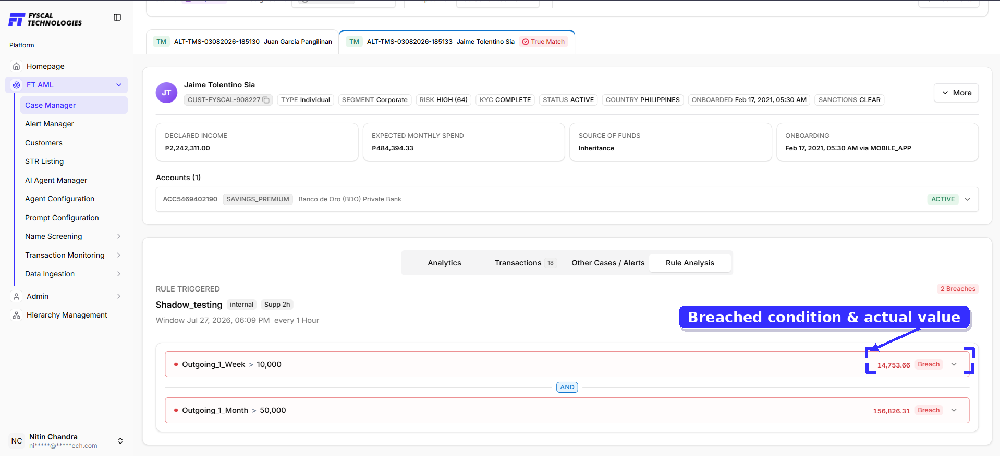
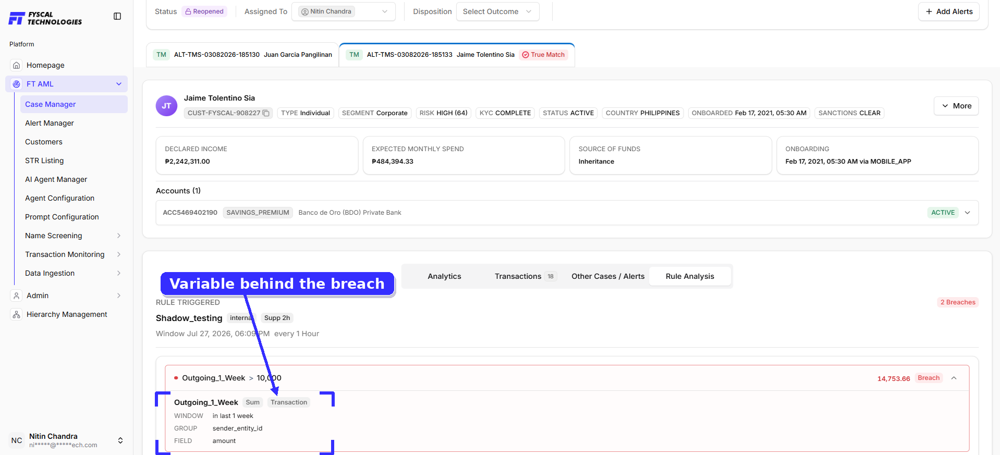
Every case moves through the same stages, regardless of which module generated the underlying alert:
Alert Triggered → Investigator Review → Findings Documented → Disposition (False Positive / Escalate for SAR-STR / Request Info) → MLRO Approval → Audit Record
A case can bundle several related alerts (see the Alerts column in Case List Columns), and each one is individually disposed through the Dispose Alert dialog, opened from within the case:
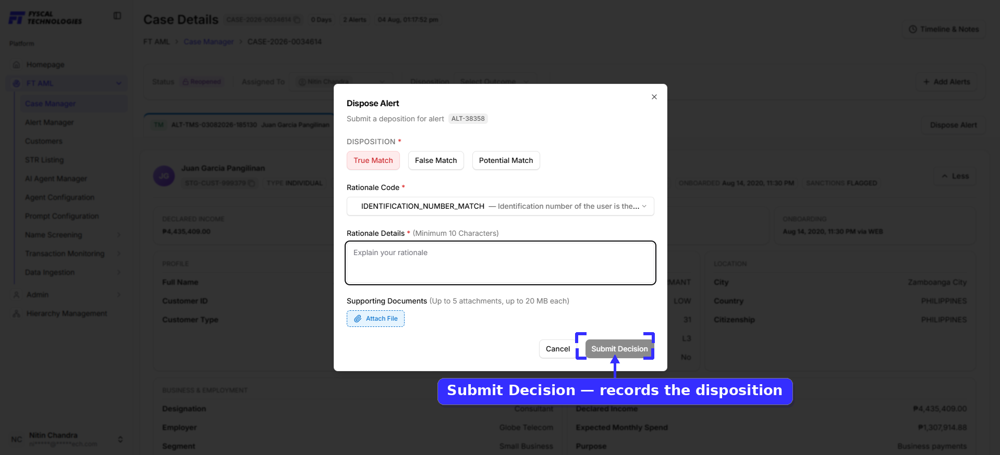
The case list surfaces the information an analyst needs to triage their queue without opening every case:
| Column | What it shows |
|---|---|
| Case Title / ID | The customer or subject name, plus the unique case reference (e.g. CASE-2026-0000087) |
| Status | Where the case currently sits — e.g. STR Created, STR Draft, Reopened, or Closed |
| Disposition | The investigation outcome — True Match, False Match, or blank while still under review |
| Assigned To | The analyst currently responsible for the case |
| Alerts | How many alerts are linked to this case — a case can bundle several related alerts on the same customer |
| Case Age | Days elapsed since the case was created, used to track against internal SLAs |
| Created At | Date and time the case was opened |
A case with Status STR Created and Disposition True Match means the analyst confirmed the hit was genuine and an STR has already been filed; a case showing Reopened means it was previously closed but new information brought it back for another look.
An STR can only be filed once a case reaches the right point in its lifecycle — it isn't available the moment a case is created. The path is: close every alert linked to the case, close the case itself with a True Match disposition, and only then does the platform offer File STR. The walkthrough below follows one real case (Pooja Sharma, CASE-2026-0034617) through all three stages, end to end.
Open the case from Case Manager. An open case with no disposition yet shows a plain Open status in the case list — this is the starting point before any of the work below happens.
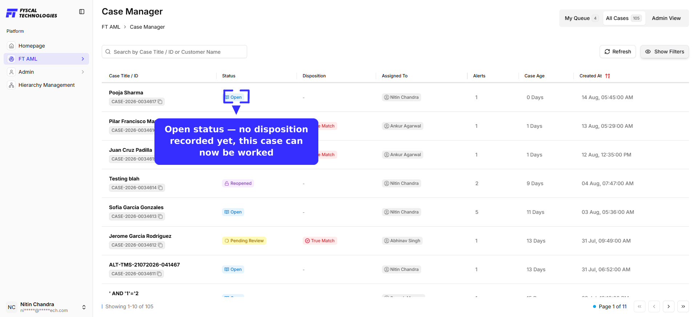
If the case still has an active alert (shown as a card just below the case header), that alert must be resolved before the case can be closed — the Disposition field at the top still reads "Select Outcome" at this point, confirming the case itself hasn't been decided yet.
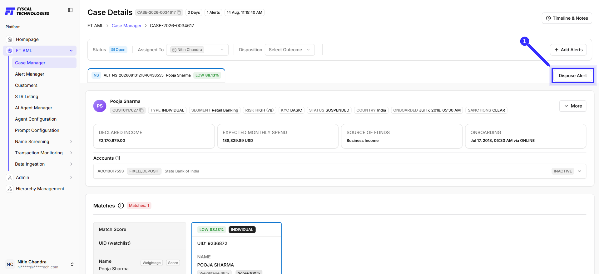
With alerts cleared, open the case's close-case workflow. The dialog repeats the same rule as a safeguard — "Make sure to close all alerts before making a disposition on this case" — so if anything was missed, this is the last checkpoint before it's caught.
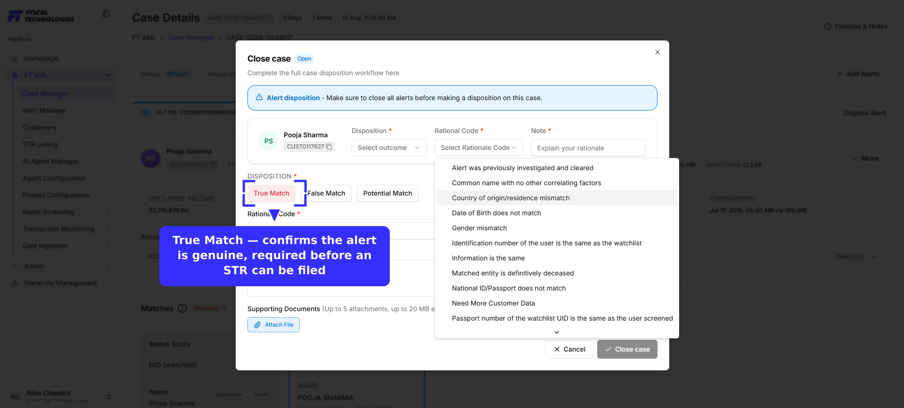
The Rationale Code field records the standardized reason behind the disposition, paired with free-text Rationale Details (minimum 10 characters) explaining the decision in plain language.
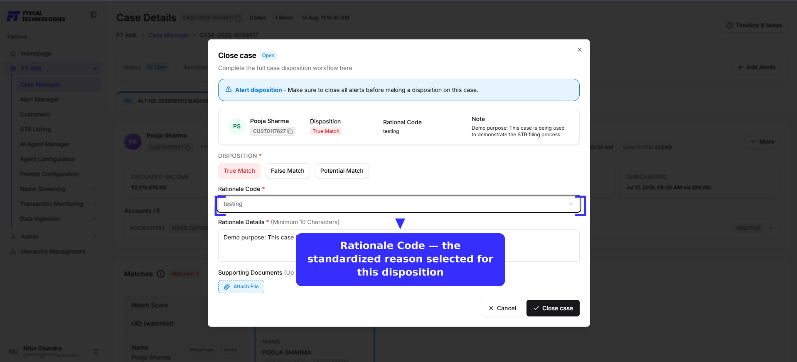
Once Disposition, Rationale Code, and Rationale Details are all filled in, Close case becomes clickable.
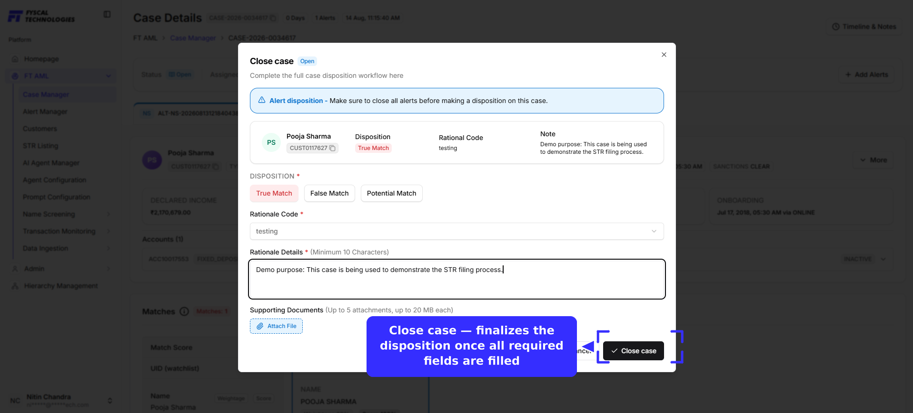
The case immediately reflects the closure: Status changes to Closed, the Disposition badge shows True Match, and — this is the moment STR filing becomes possible — a new File STR button appears next to Re-Open.
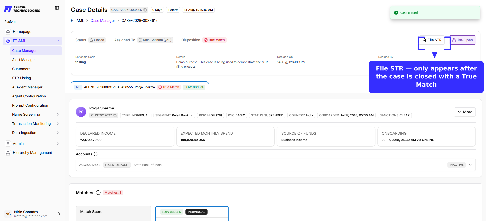
Clicking File STR opens a 6-step wizard that assembles a GoTRACS-compliant Suspicious Transaction Report. Each step must be completed before moving to the next; progress is tracked across the top of the dialog.
Step 1 — Select Alerts. Choose which of the case's alerts to include in this STR. Every transaction and party used later in the wizard is pulled from whichever alerts are selected here, so it's worth confirming this before moving on.
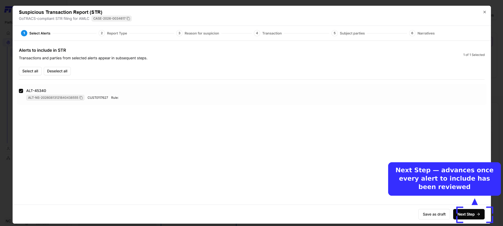
Step 2 — Report Type. This step covers everything GoTRACS needs to know about the filing itself, not the case. STR Type is usually Regular STR for most cases — High Priority, Bulk Report, Per Account, and Highly Unusual exist for specific regulatory scenarios (kidnapping, trafficking, and similarly urgent categories use High Priority, for example). Submission Type is almost always "New" for a first-time filing.
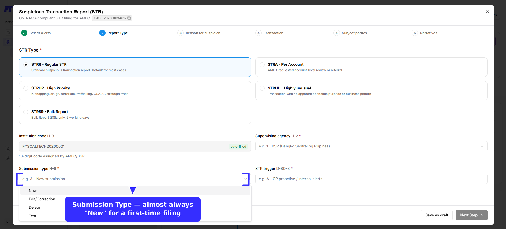
Date of determination is the date the covered person knew, or should have known, the transaction was suspicious. This date starts the regulatory filing-deadline clock.
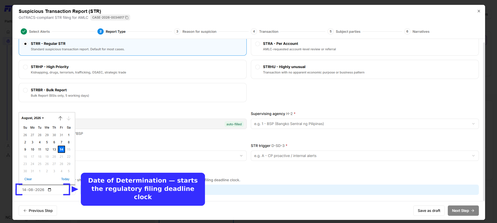
Supervising agency identifies the regulator this report is being filed with.
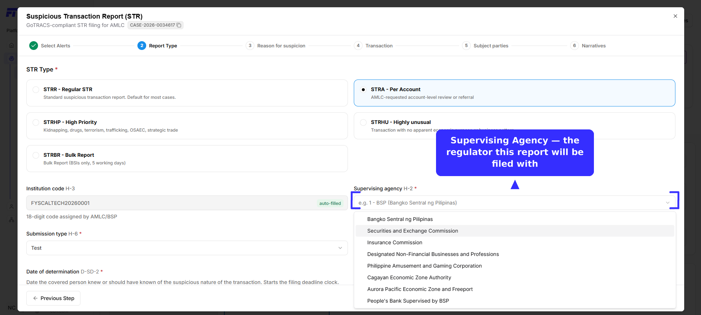
STR trigger records what actually prompted the filing — a proactive review, a watchlist match, a freeze order, and so on.
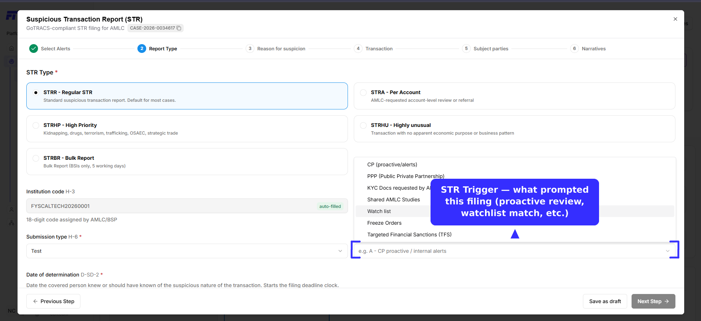
Once every field in this step is filled in, the filing deadline is calculated automatically and shown live.
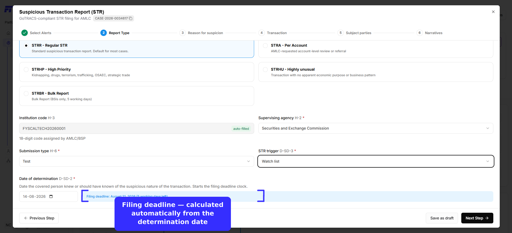
Step 3 — Reason for Suspicion. Select one or more codes describing why the activity is suspicious, from a list of 43 standardized Suspicious Circumstance (SC), Predicate Crime (PC), and Money Laundering (MC) codes.
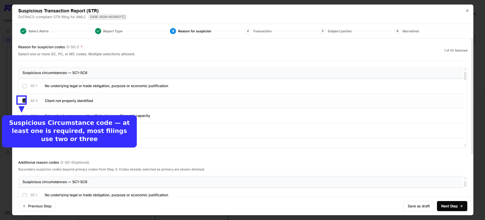
Some codes carry extra requirements — a KYC REQ tag means additional KYC documentation must be on file before that particular code can be used. An optional Additional reason codes section further down lets you add secondary codes beyond your primary selection, then Next Step continues once every relevant code has been selected.
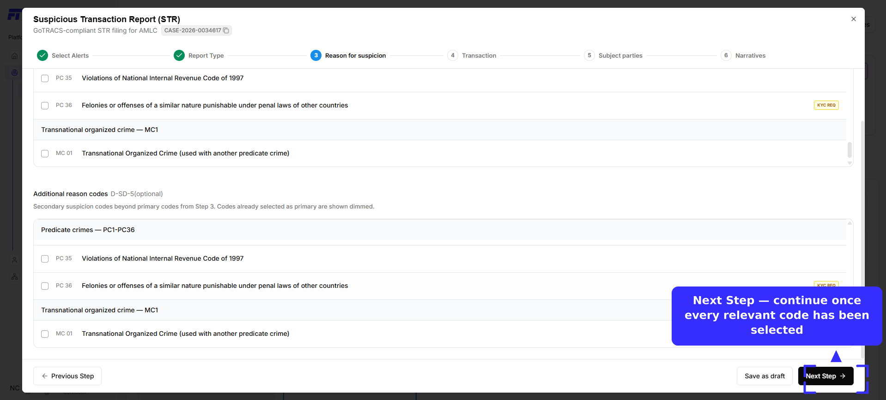
Step 4 — Transaction. Every transaction attached to the selected alert(s) appears here, pre-selected by default. Filter by type if the list is long.
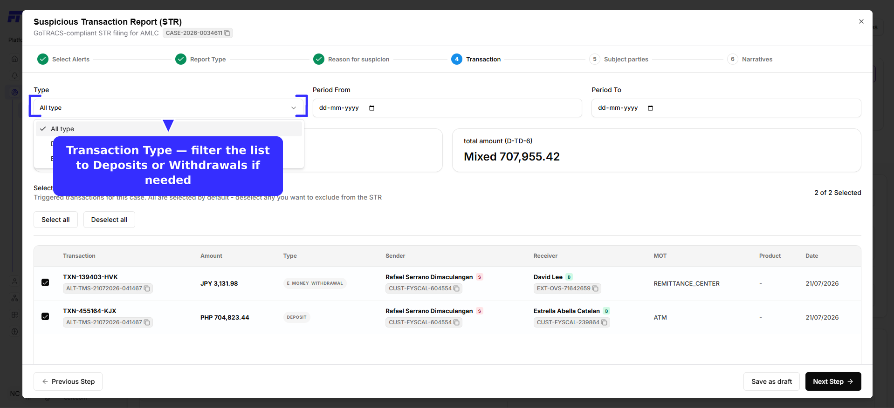
A date range narrows the list further to transactions within a specific period, useful when a case spans many transactions over time.
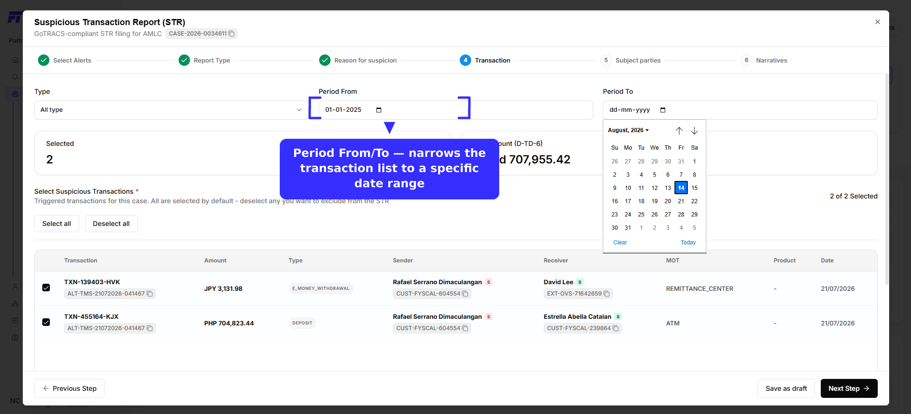
Step 5 — Subject Parties. Parties are auto-derived from the transactions selected in Step 4 — nothing to add manually in most cases. Click a party's row to expand it and confirm their details.
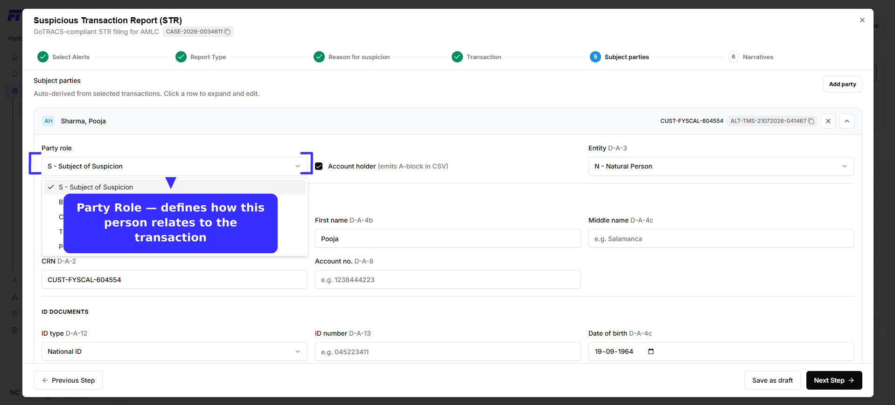
Entity Type distinguishes an individual from a corporate or other legal structure.
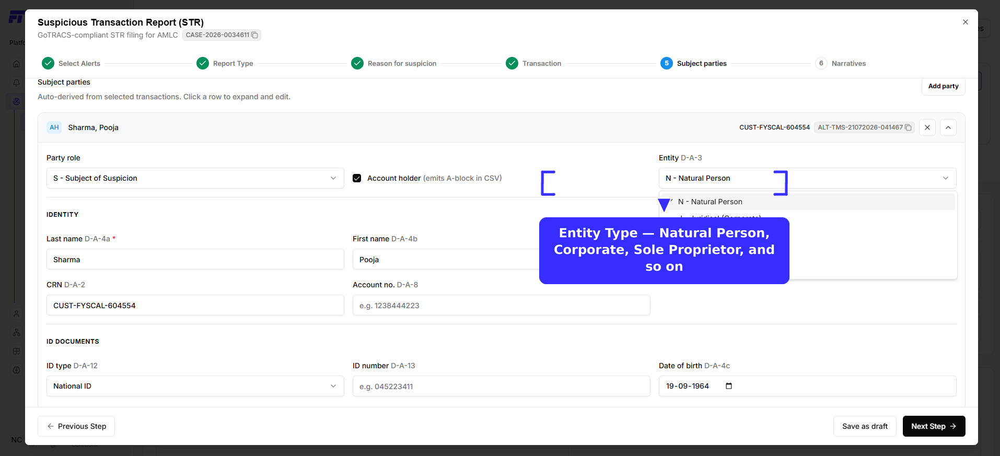
Step 6 — Narratives. The final step is a free-text narrative explaining the filing in plain language. GoTRACS expects a narrative that answers who is involved, what the activity was, when and where it occurred, why it's suspicious, and how it was carried out — a minimum of 200 characters is required, and the character counter confirms when that bar is met.
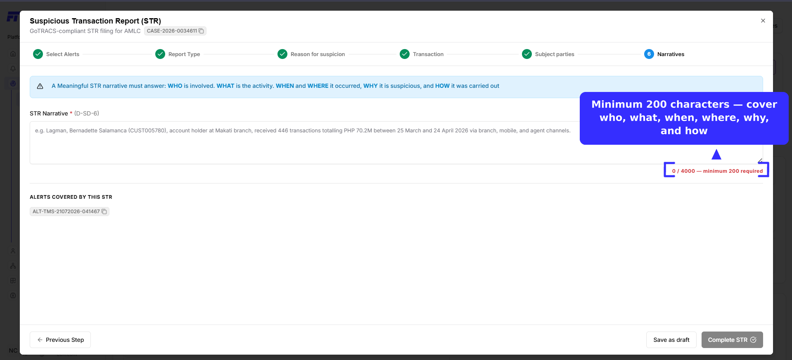
Once the narrative meets the minimum length, Complete STR becomes clickable.
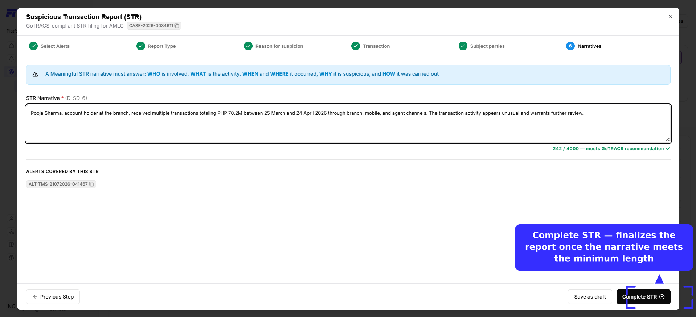
Once completed, the case's Status updates one final time to STR Created, and the File STR button is replaced by Download STR — the filed report can now be downloaded at any time, and the case can still be re-opened later if needed.
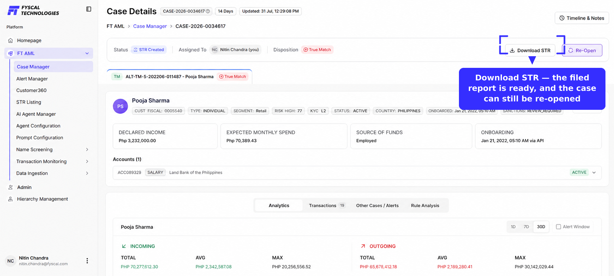
Every hit generated anywhere in the platform — a name-screening match, a transaction-monitoring rule firing — lands here first, ranked by severity and SLA deadline, before it ever becomes a case.
Like Case Manager, alerts are organized into three tabs: My Queue (alerts assigned to the logged-in user), All Alerts (the full institution-wide alert volume — this can run into the tens of thousands), and Admin View (oversight across every analyst's queue, showing Unassigned, Escalated, and SLA Breached alert counts alongside Active Agents data).
View Case — clicking a row opens the alert's detail screen, showing the match or rule detail that triggered it, the customer or entity involved, and the score breakdown behind it. From here an analyst either clears the alert directly, or escalates it — which creates (or attaches it to) a case and opens that case's own View Case screen in Case Manager for full investigation and disposition.
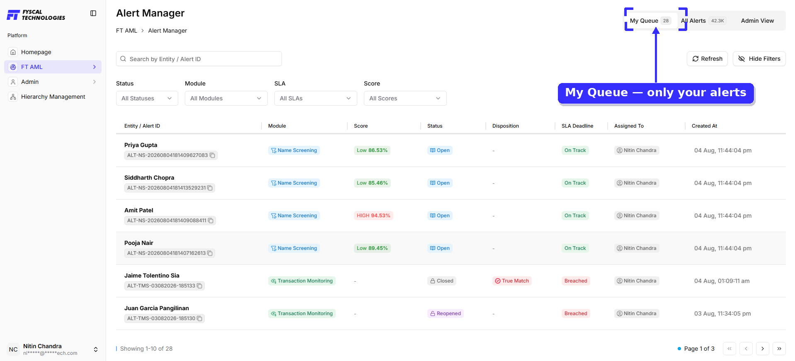
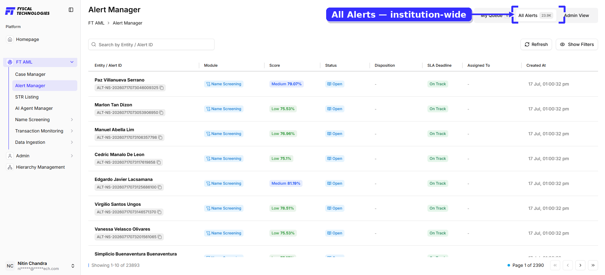
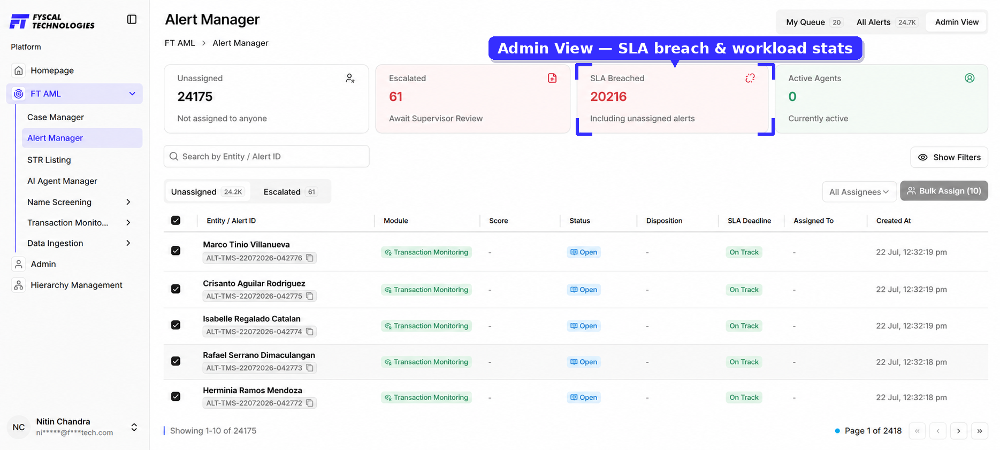
| Column | What it shows |
|---|---|
| Entity / Alert ID | The customer or subject name, plus a unique alert reference (e.g. ALT-NS-20260717...) |
| Module | Which engine generated the alert — Name Screening or Transaction Monitoring |
| Score | The match or risk score as a percentage, color-coded to the severity band it falls into (Low, Medium, High, Very High) as defined in Alert Configuration |
| Status | Open, or a later workflow state once the alert has been actioned |
| Disposition | The outcome once reviewed — blank while still open |
| SLA Deadline | Shows On Track once the alert is within its configured resolution window, and flags it once that window is at risk of being missed |
| Assigned To | The analyst responsible for reviewing the alert |
| Created At | When the alert was generated |
The Score and SLA Deadline columns exist because of how severity bands are set up in Alert Configuration — each band (e.g. Medium: 79–85%) carries its own SLA window, so a higher-scoring alert is automatically given a tighter deadline than a low-scoring one.
An alert scoring 81.19% falls in the Medium band, which — per the institution's configured severity bands — carries a 2-day SLA deadline; an analyst working their queue by SLA Deadline will see this alert before a Low-scoring one with a longer window, even if the Low one was created earlier.
The single record of every party the platform knows — individuals and businesses alike. Every other module reads from and writes back to this record: a screening hit resolves against a customer here, a case investigates a customer here, and a filed STR names a customer here. This is where you look someone up and see their complete picture in one place.
The main list covers every customer on the platform — often hundreds of thousands of records — so search and filtering are the primary way to work with it rather than scrolling.
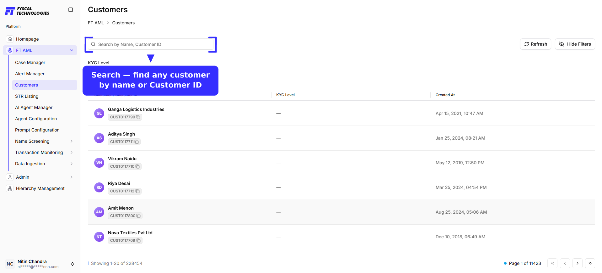
KYC Level reflects how much verification is on file for that customer — Basic covers standard identity checks, Advanced means enhanced due diligence has been completed (typically required for higher-risk customers). Filtering by this narrows the list to exactly the verification tier you're reviewing.
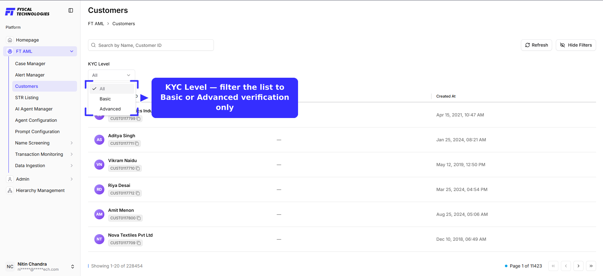
Opening a customer shows their core identity at the top — name, Customer ID, type (Individual or Business), segment, risk tier, KYC level, status, country, onboarding date, and sanctions screening result — plus declared monthly spend, source of funds, and linked accounts. Clicking More expands this into the complete KYC record: full Profile, Risk & Compliance (including PEP flag), Location, Business & Employment, and Financial Information.
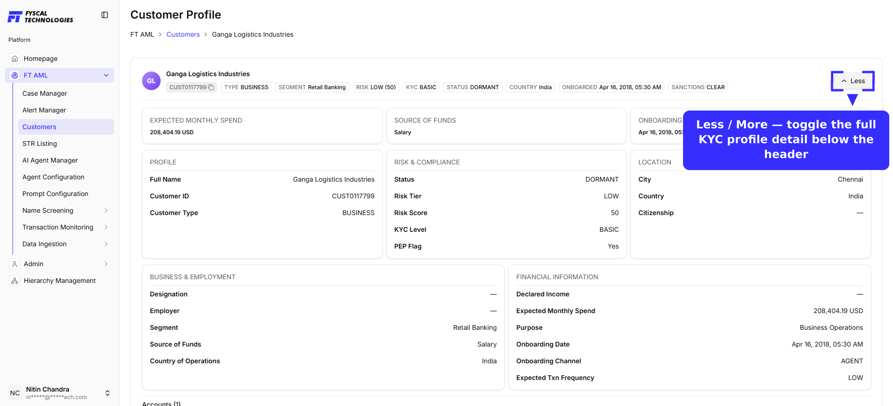
Below the profile header, five tabs cover everything that's happened with this customer. Analytics is the default view — incoming versus outgoing activity, top counterparties, and transaction type breakdown, over a 1-day, 7-day, or 30-day window (with an optional Alert Window toggle to focus on activity around a specific alert).
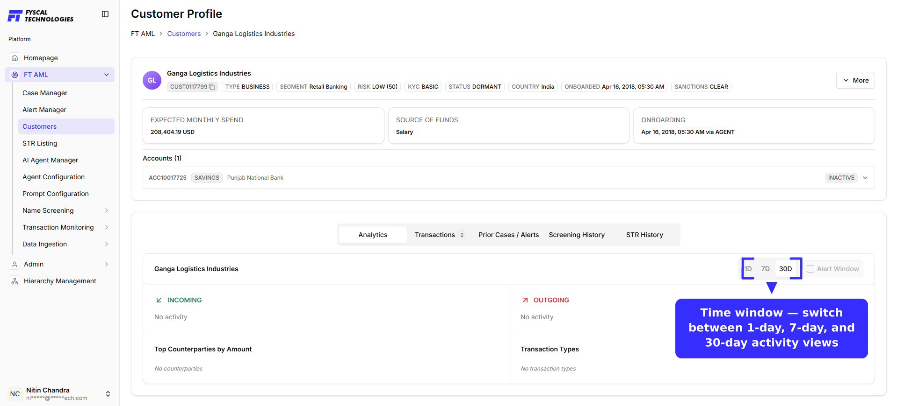
Transactions lists every transaction tied to this customer, with filters for type, channel, price range, date, and sender/receiver ID — exportable as CSV for offline review.
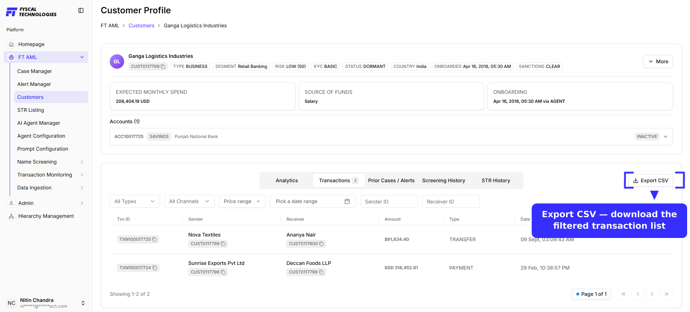
Prior Cases / Alerts shows this customer's investigation history — every case and alert ever raised against them, so you can see at a glance whether this is a first-time hit or a repeat pattern.
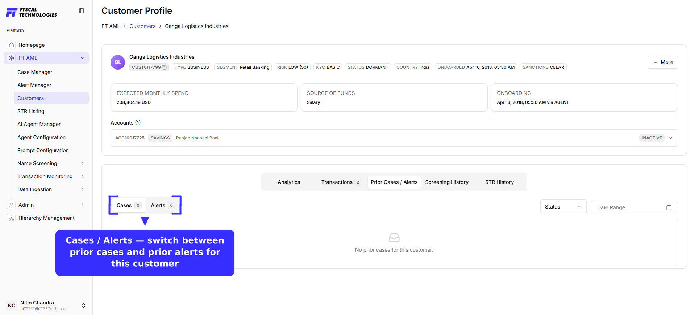
Screening History lists every name-screening run this customer has been through — Delta (ongoing re-checks as watchlists update) and Batch (scheduled bulk re-screens) both appear here, each with its resulting alert score.
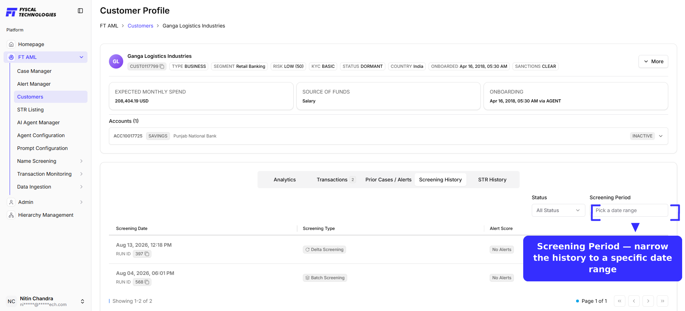
STR History lists any Suspicious Transaction Reports filed naming this customer, filterable by who filed it and when — an empty state here is common and simply means no STR has ever named this customer.
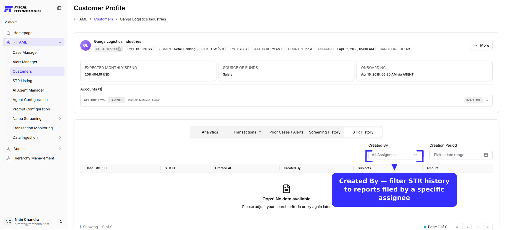
The register of every Suspicious Transaction Report the institution has filed. Where Case Manager shows the investigation, STR Listing shows the regulatory output of that investigation — one row per filing.
Each row represents one case that has produced an STR, linking the case back to the STR reference, who raised it, and the transaction subjects and amount involved — giving the MLRO a single register of everything that has been reported, without needing to reopen each case individually.
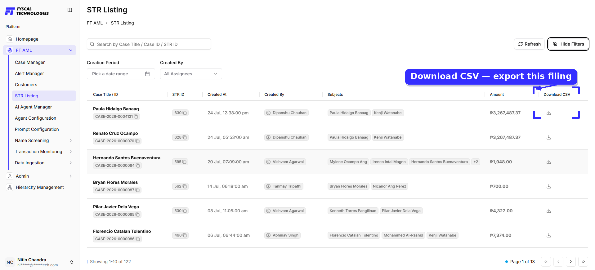
How an STR gets filed, end to end: STR Listing is a read-only register — there is no separate "create STR" form to fill in here. A filing is always the output of a case that has already been investigated in Case Manager, produced through a guided, GoTRACS-compliant filing wizard. The full process runs as follows:
The wizard itself runs across six steps:
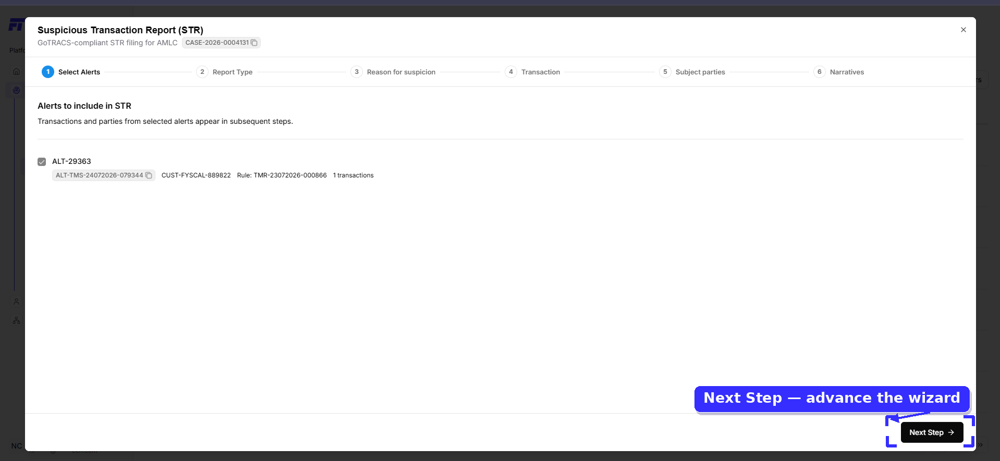
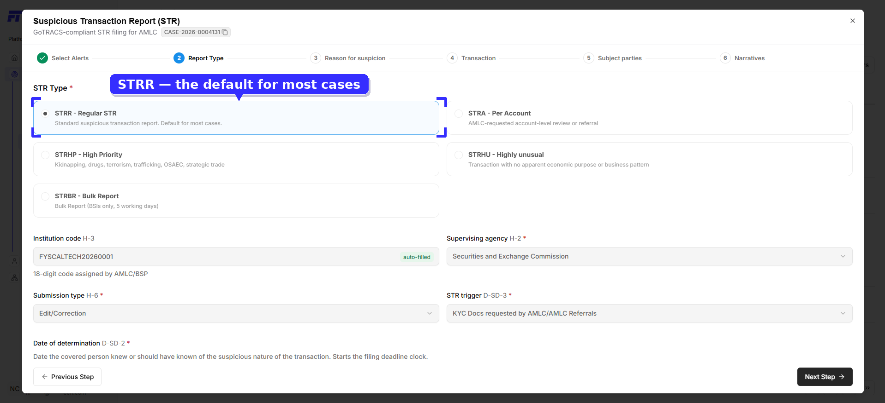
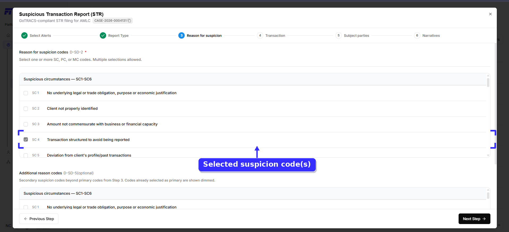
| Column | What it shows |
|---|---|
| Case Title / ID | The customer or subject name and the case that produced this STR |
| STR ID | A sequential internal reference number for the filing |
| Created At | Date and time the STR was generated |
| Created By | The analyst or MLRO who raised the filing |
| Subjects | Every individual or entity named in the STR — a filing can name more than one subject if a case involves linked parties |
| Amount | The cumulative transaction value associated with the filing |
| Download CSV | Exports the filing's underlying transaction and subject detail for submission or record-keeping |
A single STR listing three subjects and an amount of ₹747,569.31 tells the MLRO, at a glance, that this was a multi-party case — worth opening before smaller single-subject filings when prioritizing a regulator review.
Assists analysts by automating the repetitive first pass through an alert or case, so human review time goes toward judgement calls rather than data-gathering. Configured through two tabs on this same page — Prompt Config (what it's instructed to do) and Model Config (which model it calls) — with alerts also routable into cases automatically via Automation, a separate module.
Rather than an analyst manually pulling together a customer's screening history, transaction pattern, and prior case notes before forming a view, AI Manager pre-assembles that context and drafts a preliminary summary — the starting point for the analyst's own review, not a replacement for it.
Every output from AI Manager is a draft, not a decision. The Case Lifecycle in Case Manager still applies in full — an analyst reviews the AI-drafted findings, corrects anything wrong, and is the one who selects the final disposition. Nothing AI Manager produces is filed, closed, or escalated without that human sign-off.
Defines the actual instructions given to the model registered in Model Config — the other half of what makes AI Manager's drafting work. Most prompts are built around a specific purpose, like summarizing a transaction monitoring alert versus a name screening alert — but one prompt, Case Copilot, is different: it's the shared persona and formatting rules used underneath every copilot intent, rather than a summary for one alert type.
Each prompt is shown as its own card: the Purpose as the title, a Status (Active), its current version, when it was last published, and how many revisions it's been through — plus a plain-language description of what the prompt does underneath.
Every prompt is built from three parts: Description (what the purpose is for), Task (one instruction — the specific thing to do each run), and Role (the persona and rules the model follows throughout). Editing always shows exactly which version you're changing and what publishing will produce — an explicit "Editing from vX · publishing creates vX+1" banner, so it's never ambiguous whether a save overwrites history or adds to it. It never overwrites: publishing always creates the next version, keeping every prior revision intact.
The read-only view carries a version stepper at the top — back/forward arrows plus a dropdown that lists every past version by number and publish date, with a search box to jump straight to a specific one (e.g. "7"). This is a full history, not just current-vs-previous: every version a prompt has ever had stays reachable.
Below Role, a prompt can define Expected Response — the structured fields the
model's output must fill in, rather than free-form text. Each field lists its name, a type
badge where relevant (list), and guidance on what belongs in it; a field can also
be an enum — a fixed set of options the model must choose from, such as
Case Copilot's own sections/title/items contract, or
the Transaction Monitoring prompt's 8-field response with a verdict that must be
one of suspicious_activity, expected_behavior, inconclusive, or
insufficient_data.
Registers the AI model identity AI Manager actually calls — e.g. openai/gpt-oss-120b
— together with its API key, version, and Temperature (how deterministic
versus varied its output is). Only one configuration is Active at a time.
The API key field is write-only by design — once saved, it's stored encrypted and can never be viewed again through the interface, only replaced via Edit model. Every past configuration is kept below under Previous configurations, each showing its own version, status, temperature, and publish date.
Screens individuals and entities against the LSEG watchlist database to identify potential sanctions, PEP, and adverse media matches.
The module offers four ways to run a screen, used for different situations: Watchlist Search for an ad-hoc, on-demand lookup; Manual Screening for screening one customer with full profile detail during onboarding or review; Batch Screening for re-screening large customer populations on a schedule; and Delta Screening for automatically re-checking only the customers affected when the watchlist itself changes. All four draw on the same matching rules and severity bands set once in Configuration, so a match found through any method is scored and prioritized consistently.
Enables users to search for individuals or entities against the LSEG watchlist database. Used for ad-hoc, on-demand lookups — e.g. screening a customer against an international sanctions list before opening an account.
| Column | What it shows |
|---|---|
| UID | The unique identifier for that watchlist record within the LSEG database |
| Name | The individual or entity name as held on the watchlist |
| PEP Status | Whether the record is an Active politically exposed person, or another status such as former PEP |
| Country | The country associated with the record |
| Category | Individual, Organization, or Political Individual/Organization |
| Date of Birth | Where available — many watchlist entries carry only a partial or missing date of birth, which is why Name and Address weightages matter so much for matching |
A branch officer searches “John Smith” with Country set to United Kingdom and PEP Status set to Active, to quickly check whether a walk-in customer appears on any current sanctions or PEP list before opening an account.
Record detail — clicking any result row opens the full watchlist record in a modal, organized into four tabs:
Allows users to screen an individual or entity by manually entering customer information. The system compares the provided details against the watchlist database using configured matching criteria and weightages to identify potential matches. This gives analysts flexibility to screen immediately during investigations, onboarding, periodic reviews, or whenever customer information changes — outside the scheduled automated screening cycle.
After clicking Proceed to Screen, the Screening Details page shows the resulting Matches — the number of hits found, and for each one a side-by-side comparison of the entered details against the watchlist record, with the Weightage and Score contributed by each field (Name, Nationality, Date of Birth, Address, Entity Type) and the overall match score and category (e.g. Low 88.21%, Corporate). Selecting a match confirms it as the record to act on.
The weightage bar at the top of the screen (e.g. Name 60%, Address 20%, Citizenship 10%, Gender 5%, DOB 5%) shows exactly how much each field contributes to the final match score before you screen — set once for the whole institution in Screening Configuration, and simply displayed here for reference on every manual screen.
During onboarding, an analyst manually screens a new corporate client, “Meridian Trading Ltd”, entering its registered address and country of incorporation, and reviews the resulting match score before the account is approved.
Screens large customer populations at once (e.g. nightly onboarding batches), letting institutions re-screen millions of records efficiently — e.g. running the entire customer base overnight the moment a new sanctions list is received, instead of reviewing customers individually. Batch Screening itself is now a read-only history of past runs — scheduling and triggering these runs is configured from Data Ingestion → Batch Ingestion instead, keeping all recurring-job scheduling in one place across the platform.
The dashboard cards at the top — Total Runs, Processing, Completed, Failed — give an at-a-glance health check before drilling into any one run. Each row in the table then shows:
| Column | What it shows |
|---|---|
| Run Date / ID | When the run started, plus its unique Run ID reference |
| Status | Screening Success, or a run still in progress or failed |
| Customers Scanned | How many customer records were screened in that run |
| Alerts | How many hits the run produced |
| Errors | Records that failed to process, if any |
| Duration | How long the run took, start to finish |
Clicking a row opens that run's Details panel rather than a separate page. It repeats the Customers Scanned, Alerts, and Errors totals, then adds the exact Started, Completed, and Duration timestamps, the Input File the run was screened against, and a Download Results CSV button to export that run's screened records and alerts for offline review or record-keeping.
Each night, the institution's entire retail customer base is submitted as a batch job, so that any new sanctions or PEP list updates are checked against every customer without manual effort. The next morning, a compliance officer opens that run in Batch Screening to confirm it completed cleanly and download the results.
Automatically re-screens previously screened customers when the watchlist updates — the primary control for continuous, rather than point-in-time, compliance. Only the customers affected by the latest watchlist update are re-screened — e.g. a previously cleared customer is automatically rechecked the moment a new sanctions list is published, without reprocessing the full customer base.
| Column | What it shows |
|---|---|
| Run Date | When that scheduled run executed, or Upcoming for the next scheduled run |
| Customers Scanned | How many previously screened customers were affected by the watchlist update and therefore re-checked |
| Alerts Created | New hits produced by that run — often zero, since most watchlist updates don't affect any existing customer |
| Frequency | How often delta screening runs, e.g. Every 2 Days |
| Status | Scheduled, Completed, or a run currently in progress |
| Duration | How long the run took to complete |
When a new sanctions list is published, only the customers affected by that update are automatically re-screened overnight, and any new hits appear in the Alert Manager the next morning — with no need to re-run the full customer base.
Controls how strictly a record must match, and how resulting hits are prioritized for review.
Lets administrators configure the matching criteria and weightages used during screening. Each parameter — Name, Address, Citizenship, Gender, Date of Birth — can be assigned a custom weightage to determine the overall match score, so institutions can align screening sensitivity with their internal AML policies and risk appetite. Higher weightage strictness reduces false positives but risks missing true matches. A parameter can also be expanded into its own sub-criteria — for example Name into Fuzzy and Phonetic matching, or Address into Country, City, Street Address, and Region — for finer control over what drives that parameter's contribution to the score.
Lets administrators configure the alert severity levels generated during screening — defining score ranges, assigning severity levels, configuring SLA deadlines, and enabling auto-hibernation, so organizations can prioritize investigations and standardize alert handling based on risk.
| Severity | Score Range | SLA Deadline | Auto Hibernate |
|---|---|---|---|
| Very Low | 0% – 75% | No alert raised | — |
| Low | 75% – 79% | 1 day | Yes |
| Medium | 79% – 85% | 2 days | No |
| High | 85% – 90% | 3 days | No |
| Very High | 90% – 100% | 5 days | No |
A match scoring below the Very Low threshold never becomes an alert at all — it's filtered out automatically. Auto Hibernate on the Low band means a low-severity alert that isn't actioned within its SLA is automatically archived rather than sitting open indefinitely, keeping analyst queues focused on alerts that genuinely need attention. Full configuration history is retained for audit.
Configures how alerts from Name Screening and Transaction Monitoring automatically become cases in Case Manager — instead of each alert needing to be manually opened into its own case. Automation currently has one configurable area — Case Creation — which controls which alert types are eligible, and how related alerts get grouped together into a single case.
Every institution has exactly one active Case Creation configuration at a time, shown read-only here until Edit is used. It has two parts: which Alert Types are allowed to trigger automatic case creation at all, and the Alert Type Grouping rules that decide when several alerts should merge into one case instead of each opening a separate one.
Within Alert Type Grouping, each Group lists the Alert Types it applies to (here, Name Screening and Transaction Monitoring together, tagged "2 Sources"), a Case age in days, and a set of Case Status values. Read together, a group says: alerts from these sources, on the same customer, land in the same case as long as that case is still within the Case age window and currently sitting in one of the listed statuses — otherwise a new case is opened instead of merging into an old one.
Clicking Edit turns every field in the Active Configuration interactive: Alert Types become checkboxes you can toggle, and each group's Alert Types, Case age, and Case Status become editable directly in place.
Every save creates a new version rather than overwriting the last one, so the full history of how case-creation rules have changed over time is always available for audit. Configuration History lists every version — its unique Config Version ID, whether it's the currently ACTIVE one or an INACTIVE past version, when it was created, and by whom.
A customer triggers a Name Screening alert on Monday and a Transaction Monitoring alert on Wednesday. With both Alert Types in the same group, a Case age of 152 days, and Open included in Case Status, the Wednesday alert joins Monday's still-open case automatically instead of creating a second, disconnected case for the same customer.
Detects suspicious transaction patterns using configurable typologies (rules) built from reusable Variables.
Before the details below, here's the complete path a transaction takes through the engine, from the moment it lands in FT AML to a case landing on an investigator's desk:
Each monitoring rule is defined as a Typology — a named, versioned pattern (e.g. Structuring, High Value Transfer, Smurfing) built from Variables and Trigger Conditions. The Typology screen lists every rule with its current status (Draft, Shadow, or Published), the typology category it belongs to, and when it was created or last updated.
Variables are named calculations reused across rules — e.g. Count, Sum, Avg, Max, Min, Distinct Count. The Variables module lets users view available variables, search for a specific variable, sort them, and create new ones as required.
Building variables instead of repeating logic in every rule gives four benefits: Reusability (one calculation, many rules), Performance (compute once, reuse), Readability (a named variable reads better than the raw logic it represents), and Maintainability (change the definition once and every rule using it updates automatically).
Trigger conditions decide when alerts are created — e.g.
count_sender_txns_1_week > 5, amount > 10000,
country = 'High Risk'. AND requires all conditions to be true; OR requires any one
condition to be true. Values can be a Static Value (fixed threshold), a Variable (calculated),
or Ingested Data (a raw transaction field).
A Variable calculates a value; a Trigger Condition checks that value and decides whether to raise an alert. A variable on its own is just information — the trigger condition is what tells the system that information is suspicious.
Turns Execution Interval into a proper, reusable, named object instead of a setting buried inside one rule. A Schedule has its own Name, a numeric Execution Interval (e.g. 1 Week, 6 Hours), a Start Time, and an optional End Time — and it can be attached to a published rule or referenced by a rule still in draft, so the same schedule definition doesn't have to be rebuilt each time.
The list shows every schedule that's ever been created, alongside:
Clicking into a schedule opens its detail view, showing exactly where it's being used:
Example variable: count_sender_txns_1_week — the count of transactions made by each
sender in the last 7 days. The engine calculates it once per sender, and every rule can reuse
it:
| Sender | Transactions in Last Week | Variable Value |
|---|---|---|
| A | 5 | count_sender_txns_1_week = 5 |
| B | 1 | count_sender_txns_1_week = 1 |
| C | 3 | count_sender_txns_1_week = 3 |
Real example — today is 10 Jul 2026. Sender A's transactions:
| Date | Amount |
|---|---|
| 09 Jul | ₹1,000 |
| 08 Jul | ₹2,000 |
| 05 Jul | ₹5,000 |
| 29 Jun | ₹8,000 |
| 20 Jun | ₹4,000 |
| Pattern | Variable | Trigger Condition |
|---|---|---|
| Amount-based | total_amount_1_day | total_amount_1_day > 100000 |
| Count-based | count_sender_txns_24_hours | count_sender_txns_24_hours > 10 |
| Country-based | — | country = 'High Risk' |
| Combined (AND) | amount, country, count_sender_txns_1_day | amount > 50000 AND country = 'High Risk' AND count_sender_txns_1_day > 3 |
Imports watchlist and transaction data feeding screening and monitoring.
Runs scheduled bulk imports of core reference data — Customers, Accounts, and Transactions — keeping the rest of the platform populated with current records. Each file type runs as its own job on a shared schedule, and this screen is where you monitor completion, adjust timing, and dig into exactly what happened on any individual run. Recurring-job scheduling for batch processes across the platform, including Name Screening → Batch Screening, is configured from here — Batch Screening itself now shows only the read-only history of past screening runs.
The status bar across the top always shows the current schedule in one line — useful for confirming what's actually configured without opening a settings screen. A job marked Inactive is paused rather than failing; Resume restarts it on that same schedule.
Clicking Change Schedule opens a two-step dialog. The first step sets the new frequency and up to 3 run times per day, with a live preview of when the change will actually take effect.
The second step is a plain-text summary of the same change, specifically for review before anything is committed — nothing here is editable, it's a final check.
Clicking any row in the job list opens its full detail — total records, how many were successfully ingested versus skipped, exact start/completion timestamps, and the source file path. Every job's errors can be downloaded as a CSV, so a skipped-row count is never a dead end — you can see precisely which rows failed and why.
Provides a complete history of watchlist files ingested into the system, so users can monitor the status of each ingestion process, verify successful uploads, and review ingestion type, source, processing time, and records processed — helping ensure the latest watchlist data is available for customer screening.
Ingestion Type tells you what kind of update was applied: Delta files add or update watchlist records (the bulk of daily traffic — often thousands of rows), while Delete files remove records the provider has withdrawn. Both run automatically on a schedule from the source provider (LSEG), and this screen is where you confirm each one actually completed rather than silently failing overnight.
Provides an overview of all files ingested into the transaction monitoring system, so users can track ingestion jobs, monitor processing status, and verify that transaction, entity, and instrument data have been imported successfully — giving visibility into data ingestion health to ensure accurate transaction monitoring.
The platform-wide settings area — separate from the module-specific configuration screens covered elsewhere in this guide. Covers your own account, who can do what across the platform, and the organizational reporting structure everything else routes through.
Controls who can see and do what across the platform, aligned to the roles introduced in Roles & Access:
Admin is also the hub that links out to every configuration screen covered elsewhere in this guide, rather than duplicating them:
Defines the organizational reporting structure that AML operations run on top of — who sits above whom, and which unit or branch each user and case belongs to. Screening, monitoring, and case data all inherit this structure, which is what makes role-based routing and escalation possible elsewhere in the platform.
Everything that isn't specific to one module: answers to common questions, every AML and platform term defined once, and how to reach the support team when something needs a human.
Answers to the questions that come up most once teams are actually using the platform day to day, grouped by module.
What's the difference between an alert and a case?
An alert is the automated
signal Name Screening or Transaction Monitoring raises. A case is what that alert becomes once
it needs a human to actually look at it, document findings, and reach a disposition.
Who's allowed to close a case?
An analyst can close a case they own as a
False Match. Anything escalated as a True Match needs sign-off from a Compliance Officer or MLRO
before it's actually closed.
Can a case be reassigned partway through?
Yes — supervisors and officers can
reassign a case from Admin View, which is useful when someone's out or a queue needs
rebalancing.
Is everything done on a case actually logged?
Yes. Every status change, note,
and disposition is timestamped and attributed to the user who made it — that's the audit record
described in Case Lifecycle.
Why does an alert sit in the queue instead of becoming a case straight
away?
Not every alert warrants a full investigation — Alert Manager is the
triage layer where an analyst does a quick first pass and either clears it, or escalates it into
a case in Case Manager.
Who can see alerts outside their own queue?
My Queue is scoped to the
logged-in analyst. Seeing everything — All Alerts — is limited to Compliance Officers and
supervisors using Admin View.
What are alerts ranked upon?
Primarily the Score and the
SLA Deadline that follows from it. Every alert's match or risk score maps to a
severity band (Low, Medium, High, Very High) configured in Alert
Configuration, and each band carries its own SLA window — so a higher-scoring alert is
automatically given a tighter deadline than a lower-scoring one, regardless of which was
created first. Sorting the queue by SLA Deadline surfaces the alerts most at risk of breaching
their window first, which is the recommended way to work a busy queue.
Our alert volume feels too high — what actually helps?
That's usually a
configuration issue, not a triage issue — it means the severity bands or matching weightages in
Configuration need tightening, not that analysts need to work faster. Raise
it with a Configuration Admin.
What's the difference between a case and an STR?
The case is the internal
investigation file. The STR is the formal report that gets filed externally with the FIU once
that investigation confirms suspicious activity.
Who has to sign off before an STR is filed?
The MLRO, or another designated
Compliance Officer with filing authority — this is the "MLRO Approval" step in the Case
Lifecycle.
Can an STR be raised straight from an open case?
Yes — escalating a case
toward a filing is what creates its STR Listing entry; there's no separate form to fill in from
scratch.
What actually counts as a match if the spelling is slightly different?
That's
what Fuzzy matching is for — it's built to catch spelling variants and transliterations, not
just exact string matches. See Screening Configuration for how much weight
it carries in the score.
Can I screen a company as well as a person?
Yes — Entity Type on the Manual
Screening form supports both Individual and Organization.
If I mark a hit as a false positive, is that decision recorded anywhere?
Yes
— the disposition and the analyst's rationale are both logged against that screening record for
audit, the same as any other case disposition.
Who keeps the watchlists themselves up to date?
The data itself comes from
the provider (LSEG) via the scheduled ingestion jobs covered in Data
Ingestion — Configuration Admins manage the screening rules on top of it, not the
underlying list content.
Is there a way to test a new rule before it goes live?
Yes — that's exactly
what Dry Run is for: running the rule against historical data to see what it would have caught,
before it's published and starts generating real alerts.
Who's allowed to create or publish a rule?
Only users with Configuration
Admin permissions — it's kept separate from the analyst role deliberately, since a bad threshold
change affects every alert the rule generates afterward.
Does monitoring run in real time?
It runs on the rule's configured Execution
Interval — anywhere from near real-time to daily, depending on how the rule is set up — rather
than being instant for every rule by default.
What file formats does ingestion accept?
CSV, XML, and JSON are supported
natively, along with proprietary formats through custom connectors where needed.
What happens if a batch job partially fails?
Whatever rows did load
successfully are kept, and the failed rows are logged as errors for review — a partial failure
doesn't roll back the entire batch.
Who's responsible for data quality issues — us or the platform?
It's shared:
the source system owner is responsible for what's in the file, and the AML Platform Admin is
responsible for the mapping and validation rules that catch problems on the way in.
Terms used throughout this guide, in one place.
| Term | Definition |
|---|---|
| Case | The formal investigation record opened in Case Manager once an alert needs human review. |
| Delta Screening | A screening run that re-checks only the customers affected by a watchlist update, rather than the full customer base. |
| Dry Run | Running a transaction monitoring rule against historical data to see what it would have flagged, before publishing it live. |
| Escalation Path | The automatic routing of an unresolved case or alert up to a supervisor, as defined in Hierarchy Management. |
| False Match | A hit — on a screening match or a transaction rule — that turns out to be legitimate activity incorrectly flagged. |
| FIU (Financial Intelligence Unit) | The national agency that receives Suspicious Transaction Reports. |
| Fuzzy Matching | A name-matching technique that catches spelling variants and transliterations, not just exact matches. |
| Hierarchy | The institution's formal reporting structure — who sits above whom — modeled in Hierarchy Management. |
| Ingestion Job | A single run of loading data — watchlist, transaction, or entity records — into the platform. |
| Maker-Checker | A dual-control process where one person prepares an action (e.g. a new rule) and a different person must approve it before it takes effect. |
| Mapping | The rules that define how fields in an incoming source file correspond to fields inside the platform. |
| MLRO (Money Laundering Reporting Officer) | The individual with the authority to approve and file an STR. |
| PEP (Politically Exposed Person) | Someone who holds — or is closely linked to someone who holds — a prominent public position, and therefore carries elevated AML risk. |
| Rule Engine | The configurable system behind Transaction Monitoring that evaluates transactions against variables and typologies. |
| Severity | The risk band assigned to an alert (Low, Medium, High, Very High), which drives its SLA deadline. |
| SLA (Service Level Agreement) | The maximum time allowed to action an alert or case before it's considered overdue. |
| Smurfing | Using multiple individuals to conduct several small transactions on behalf of one person or organization, keeping each transaction under reporting thresholds to avoid detection. |
| STR (Suspicious Transaction Report) | The formal report filed with the FIU once a case confirms suspicious activity. |
| Structuring | Deliberately breaking a single large transaction into multiple smaller ones to stay under a reporting threshold and avoid triggering mandatory reporting. |
| Triage | The first, quick review of a new alert to decide whether it needs to be escalated into a full case. |
| Typology | A named, predefined pattern of suspicious transaction behaviour — e.g. Structuring or Smurfing — that a monitoring rule is built to detect. |
| Validation | The checks applied during ingestion to confirm incoming data meets the platform's technical and business requirements. |
| Watchlist | The database of sanctioned, PEP, or otherwise high-risk individuals and entities that screening checks customers against. |
| Issue | Solution |
|---|---|
| Login failed | Verify credentials, or use Forgot Password |
| Ingestion job stuck in Processing | Check source feed, click Refresh, escalate to IT/Platform Admin |
| Screening returns no matches | Confirm watchlist ingestion completed successfully |
| Unexpected spike in alerts | Review recent weightage or rule threshold changes |
| Rule not triggering as expected | Run a Dry Run to validate conditions against historical data |
Tell us a little about what you're working on and the team will route you to the right person — typically within one business day.
Thank you for using FT AML.
Version history for the FT AML platform, newest first. For what each module actually does, see its own page in this guide.
Transaction Monitoring Rules gets a new Schedules screen — named, reusable run schedules that attach to a rule (Live in) or a draft. AI Manager adds Case Copilot, a shared persona prompt, plus Expected Response — structured output fields, including enums, that every prompt can now define. See Schedules.
Agent Configuration and Prompt Configuration are now unified as two tabs — Prompt Config and Model Config — under a single AI Manager page, renamed from AI Agent Manager. Model Config adds a Temperature setting and full version history with one-click Restore; Prompt Config now tracks a revision count on every prompt. See AI Manager.
Registers the AI model identity and the Role/Task/Description prompts behind AI Agent Manager's drafting, as two new configuration screens. See AI Manager.
A full profile for every customer — KYC detail, linked accounts, and five activity tabs covering analytics, transactions, prior cases, screening, and STR history. See Customers.
Scheduled bulk imports for Customers, Accounts, and Transactions, with adjustable run schedules and a downloadable error report per job. See Data Ingestion.
Automated first-pass drafting for alerts and cases, so analyst review time goes toward judgement, not data-gathering. See AI Manager.
Weightages for Name, Address, Citizenship, Gender, and Date of Birth are now easier to review at a glance. See Name Screening.
SLA Breached counts in Admin View now reconcile correctly with individual alert deadlines. See Alert Manager.
major.minor.patch: major releases introduce a new module, minor releases add capability to an existing module, and patch releases are fixes with no visible change to how a module works.